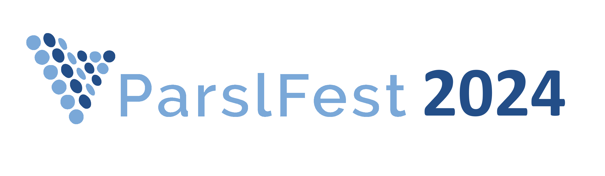
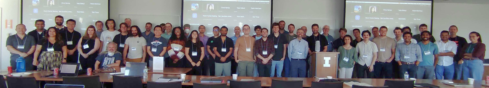

ParslFest 2024 - Annual Community Gathering (Hybrid) September 26-27, 2024

ParslFest 2024 happened on September 26–27. This annual community event brought together researchers, developers, and cyberinfrastructure experts worldwide to discuss experiences using and developing Parsl and Globus Compute - a federated function-as-a-service platform related to Parsl.
Presentations
Presentation recordings will be posted to our site after the event.
Location (for in-person component)
ParslFest was held in the Orange & Blue Conference Room at the Illini Center in the Chicago Loop.
Driving Directions
From the west, follow the Eisenhower Expressway (290) east into town, where it becomes Congress Avenue. Exit Wacker Drive and follow the signs that read Upper Wacker Drive. You will be driving north. The Illini Center will be on your left just before Adams Street. From the south, follow the Kennedy Expressway (90/94) west and exit on Monroe Street. Turn right (east) on Monroe and follow it to Wacker Drive and turn right (south). The Illini Center will be on your right just after Adams Street. From the north, follow the Kennedy Expressway (90/94) south and exit on Jackson Street. Turn left (east) on Jackson and follow it to Wacker Drive and turn left (north). The Illini Center will be on your left just before Adams Street.
Public Transportation
The Center is located just two blocks from the Quincy brown line stop on the CTA ‘L’ train and near several bus stops. For Metra users, Union Station is just across the river and Ogilvie Transportation Center is two blocks away. Union Station also services Amtrak trains, the Lincolnland Express and Megabus.
- CTA ‘L’ Train and Bus: transitchicago.com
- Metra: metrarail.com
- Amtrak: amtrak.com
- Megabus: us.megabus.com
There are three convenient parking garages are located near the Center:
- Tower Self Park: entrance located on Adams Street between Franklin and Wells Streets.
- 500 W Monroe Garage: entrance located on Monroe Street between Clinton and Canal Streets.
- 322 W Van Buren Street Lot: entrance located on Van Buren between Wacker Drive and Franklin Street.
Note that parking can be quite expensive, and pre-reserving a space via SpotHero or a similar service can be much cheaper.
Event Program
Thursday, September 26, 12 pm - 5 pm CDT (17:00 - 22:00 UTC)
12:00 – 🍴 Lunch (provided)1:00 pm - Welcome! - Kyle Chard, University of Chicago/Argonne National Laboratory.
1:15 pm - Session 1 | Chair: Kevin Hunter Kesling
- Ben Clifford: Codebase Stories - A Year in Parsl Development | Slides
- Andrew S. Rosen: The Quantum Accelerator: Accessible and Scalable Materials Science Workflows. | Slides
- Arha Gatram: Decorators and Function Parameters | Slides
- Sander Vandenhaute: Scalable Molecular Simulation | Slides
- Nishchay Karle: Usage Tracking in Parsl | Slides
- Satyarth Praveen: Leveraging Globus API for High-Performance Data Transfer and Computation
- Daniel S. Katz: An Update on Parsl Sustainability | Slides
2:45 - Session 2 | Chair: Daniel S. Katz
- Douglas Thain: TaskVine Overview | Slides
- Colin Thomas: Parsl and TaskVine: Interactions Between DAG Managers and Workflow Executors | Slides
- Christopher Harrop: Federated Numerical Weather Prediction Workflows with MPAS | Slides
- Michael Buehlmann: Analysis Portal for Cosmological Simulations
- Tyler J. Skluzacek: A Workflows Ecosystem for ESGF Data
- Haotian Xie: Diamond – An Integration Portal for Using Globus Compute via a Frontend | Slides
4:00 - Session 3 | Chair: Reid Mello
- Douglas N. Friedel: Tracking File Provenance with Parsl | Slides
- Kevin Hunter Kesling: Globus Compute Update
- Yadu Babuji: Replacing Channels with Globus Compute Executors in Parsl | Slides
- Akila Ravihansa Perera: Enabling Economical and Scalable Genomic Workflows | Slides
- Gus Ellerm: Extending Globus Compute with RO-Crate provenance models | Slides
6:00 pm - 🍴 Dinner and Darts FlightClub
Friday, September 27, 8:30 am - 4 pm CDT (13:30 - 21:00 UTC)
9:00 am - 🥐 Breakfast (provided)9:25 am - Session 4 | Chair: Kyle Chard
- Josh A. Bryan: Future of Globus Compute | Slides
- Reid Mello: Multi-user Globus Compute Endpoints | Slides
- Andre Bauer: The Globus Compute Dataset: An Open Function-as-a-Service Dataset From the Edge to the Cloud | Slides
- Dante D. Sanchez-Gallegos: Creating Wide-Area Distribution Systems with DynoStore and Globus Compute
- Valerie Hayot-Sasson: Developing Distributed High-performance Computing Capabilities of an Open Science Platform for Robust Epidemic Analysis
10:40 am - Session 5 | Chair: Yadu Babuji
- Matthew Chung: Seesaw: Elastic Scaling for Task-Based Distributed Programs | Slides
- Mansi Sakarvadia: Scaling ML Interpretability Experiments Using Parsl | Slides
- Takuya Kurihana: Scalable Earth Observation ML Workflow in Climate Applications | Slides
- Lola Obielodan: Synergies among Parsl, MLOPs, and custom cloud clusters
- Zilinghan Li and Ravi K. Madduri: Using Globus Compute to Streamline Federated Learning Applications | Slides
11:45 a.m. - Session 6 | Chair: Ben Clifford
- Christine Simpson: Parsl at ALCF: Use cases and challenges for IRI, Aurora, and beyond
- Yadu Babuji: MPI+FaaS: Extending Parsl and Globus Compute to Represent and Execute MPI Tasks | Slides
- Matthew Baughman: Task Orchestration in Heterogeneous Computing Environments using Globus Compute
- Inna Brodkin: Extreme-Scale Monitoring of Parsl Workflows with Chronolog | Slides
- Rajat Bhattarai: Dynamic Resource Management for Elastic Scientific Workflows using PMIx/PRRTE | Slides
- Greg Pauloski: TaPS: A Performance Evaluation Suite for Task-based Execution Frameworks | Slides
Our Friday afternoon level up session 🍄 is aimed at power users who want to become even more powerful. There will be six 25-minute talks on Parsl internals. Come for the first hour if you just want a taster, or stay for the whole session to really dig in.
1:30 - 2:20 p.m. – Power users level-up: Intermediate 🍄 (Ben Clifford)- Running a task: from app definition to an htex worker and back again
- Blocks: batch systems, providers, launchers, scaling
- Elaborating tasks: dependencies, retries, checkpointing, file staging, join_apps
- Understanding the monitoring database
- Getting objects to workers: pickle, with an emphasis on common Parsl problems such as (un)installed packages, functions and exceptions
- Plugging your own code into Parsl. How and why?
General Inquiries or Questions?
Contact us at parsl@googlegroups.com.
Prior ParslFest Meetings
Parsl community meetings have brought together hundreds of researchers, developers, and cyberinfrastructure experts for meetings that included presentations and discussions.
The ParslFest 2019 page includes the agenda and all presentations (slides) from ParslFest 2019.
The ParslFest 2020 page includes the agenda and all presentations (slides and videos) from ParslFest 2020.
The Parsl & funcXFest 2021 page includes the agenda and all presentations (slides and videos) from Parsl & funcXFest 2021.
The Parsl & funcXFest 2022 page includes the agenda and all presentations (slides and videos) from Parsl & funcXFest 2022.
The ParslFest 2023 page includes the agenda and all presentations (slides and videos) from ParslFest 2023.